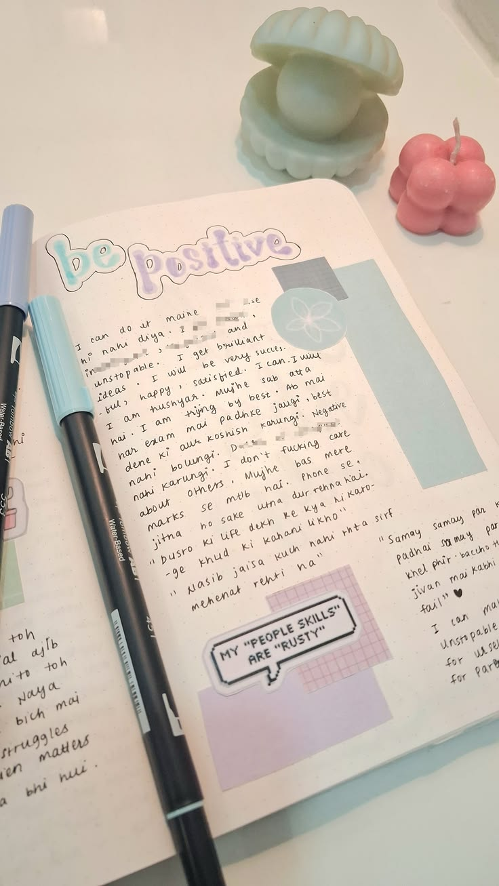
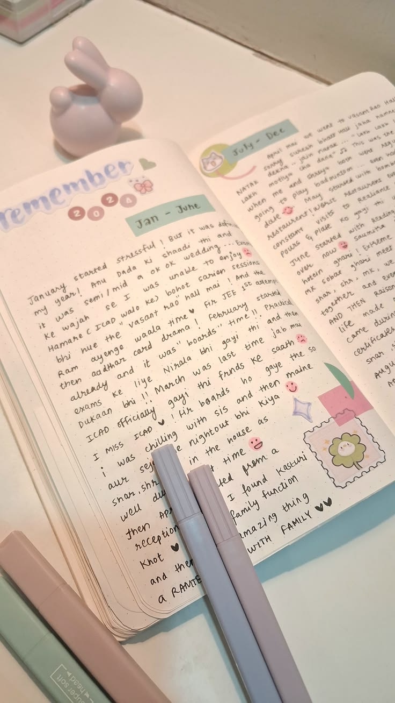

What I absolutely love
Journaling
It was during lockdown that I discovered I truly love journaling and creativity. What started as a way to pass the time turned into a habit I still keep.



Reading books
I read a lot of books, mainly fiction. Here's everything I've made my way through so far:
- Picking Up Daisies On Sundays
- A Good Girl's Guide to Murder
- Cruel Prince
- Thousand Splendid Suns
Watching movies & shows
I'm not exactly a cinephile, but I've watched more shows, sitcoms, movies, and real-life documentaries than I can count. A few favourites:
- Wake Up Sid!
- 12th Fail
- Dark
- Death Note
Photography & visual content
I love capturing photos and putting together visually pleasing content. Most of it lives on my Pinterest.
View my Pinterest →Public speaking
I've been anchoring since I was a child, and I've anchored many events in college. I'm also a member of Toastmasters, where I keep sharpening this side of me.